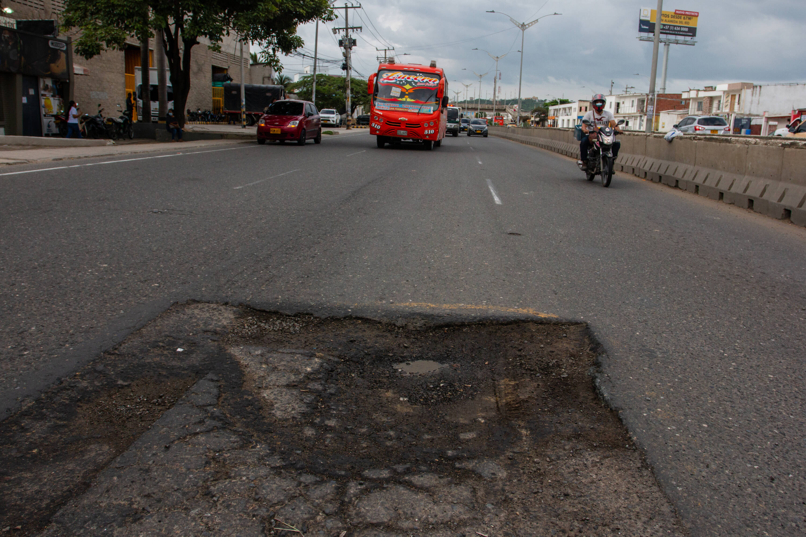

Fase piloto en curso
BogoVial
Reporte, priorización y seguimiento de daños en vías, andenes y señalización
BogoVial inicia su fase piloto en el sector de la manzana entre las calles 48 y 49 y las carreras 15 y 16, en el sector Quesada de Teusaquillo, combinando una plataforma web con una maqueta física a escala que enlaza, mediante códigos QR, los puntos críticos reales con su información en línea.